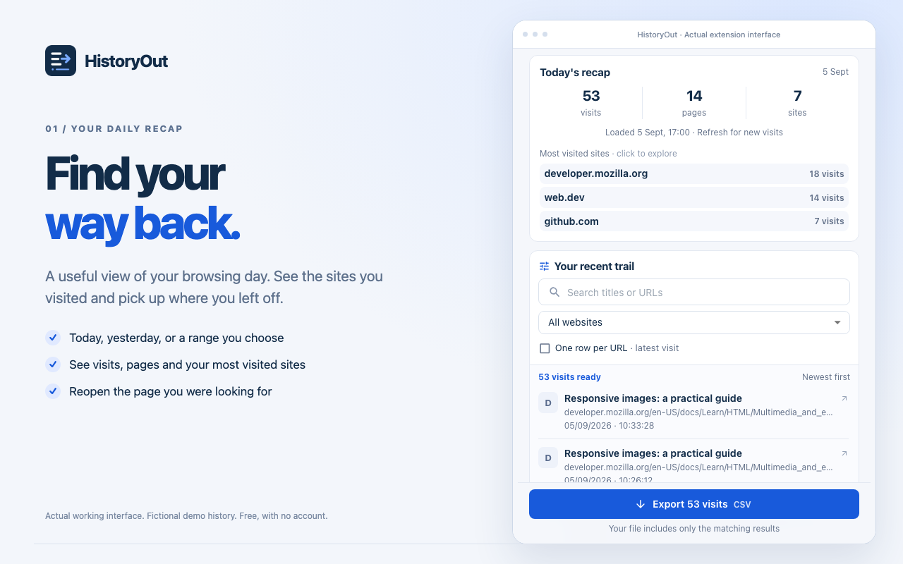

{kind=link}

HISTORYOUT 2 / LAUNCH ASSET REVIEW
Find your way back.
Five fresh store screenshots and a finished 50-second product video, captured from the working extension. The practical story: revisit your day, resume your research, and export only what matters.
All history shown is fictional demonstration data. The controls, interactions and downloaded HTML file are real. Nothing here contains personal browsing history.
The 50-second demo
Captioned and silent, with no borrowed footage or music. 1280 × 720, H.264, 30fps. The video ends on the actual downloaded HTML export.
Five store screenshots
Every PNG is 1280 × 800. Branded compositions use actual interface captures.
{kind=link}
{kind=link}
{kind=link}
{kind=link}
Original captures and sources
- Original 400px panel, first use
- Original 400px panel, daily recap
- Original desktop workspace
- Actual screenshot HTML export
- Reproduction notes
- Brand master SVG
{kind=link}
{kind=link}
{kind=link}
{kind=link}
Rebuild the extension, then run npm run assets to reproduce the captures and video.